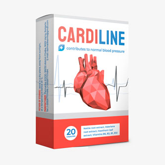

Hipertenzija gali nepasireikšti metų metus. Padidėjčs kraujospūdis priskiriamas nuovargiui,
orui ar tam tikram organizmo ypatumui. Kai atsiranda galvos skausmai, nemiga ar apsunkintas kvėpavimas, tai
paskutinis dalykas, apie kurį galvojama, yra širdies problemos. Su manimi viskas gerai, lauke tiesiog
karšta, - sakydavo mano mama, kai jai atsirado dusulys.
Man baisu prisiminti tą dieną, kai aš galėjau ją prarasti... Maždaug prieš 2 mėnesius iki
širdies priepuolio ji pradėjo greitai pavargti ir skųsti galvos skausmais. Nepaisant to, kraujospūdis nebuvo
didelis - 135/90. Priepuolio dieną mama pasijuto normali ir nuvažiavo į parduotuvę. Vėliau man paskambino iš
ligoninės ir pasakė, kad ji yra reanimacijoje. Viskas apsiėjo.
Atsigavimas buvo labai ilgas, ir priepuolis galėjo pasikartoti bet kurią akimirką.
Kraujospūdis vis tiek buvo 150/95. Dėl daugybės tablečių buvo blogi analizių rezultatai, dėl to gali
išsivystyti inkstų nepakankamumas. Reikėjo skubiai sumažinti kasdien vartojamų tablečių skaičių. Bet kaip?
Juk be jų būklė akimirksniu pablogėja.

Mes paprašėme Europos kardiologų draugijos pagalbos. Kardiologas Algirdas Žirgauskas
paaiškino, kad paskirtų vaistų negalima atšaukti staiga. Būtina išvalyti kraujagysles ir juos tonizuoti.
Ir tik po to palaipsniui mažinti vaistų dozuotę. Siekiant išvalyti ir sustiprinti kraujagysles, jis išrašė
Cardiline.
Mama atliko kursą ir pradėjo jaustis daug geriau. Pradėjo žvaliai atsibusti, o ne su galvos
skausmais. Skausmai krūtinėje, dusulys ir nuovargis dingo. Bendra būklė pagerėjo, o testai parodė normalų
cholesterolio kiekį. Palaipsniui gydantysis gydytojas sumažino vaistų dozuotę. Po šešių mėnesių kardiologo
patarimu mama atliko dar vieną Cardiline kursą.